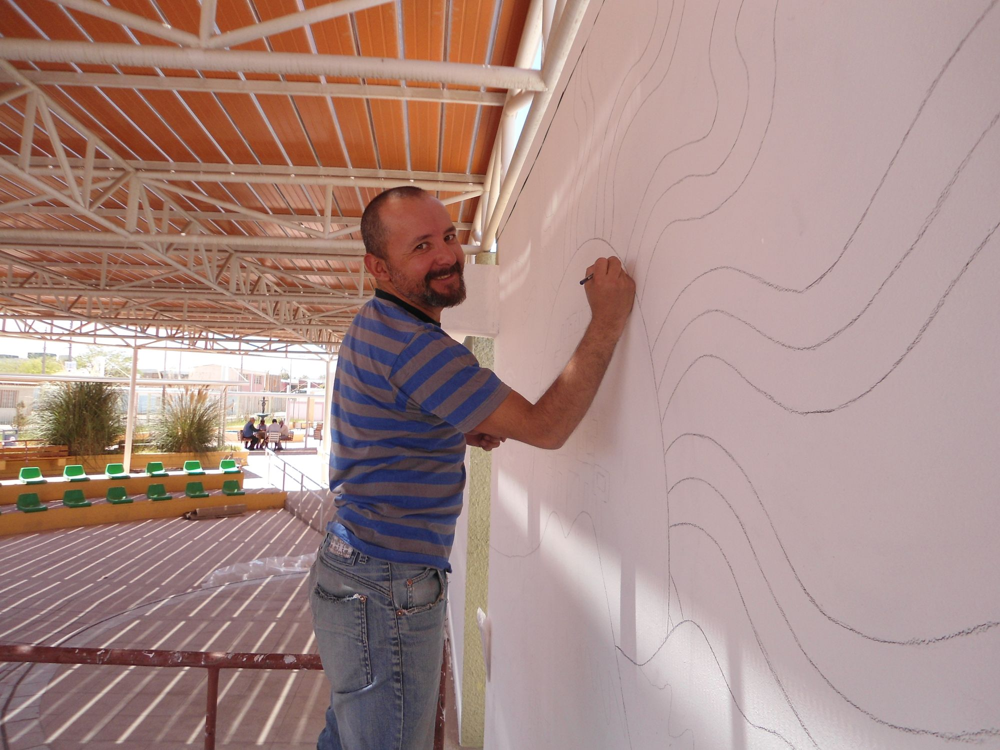
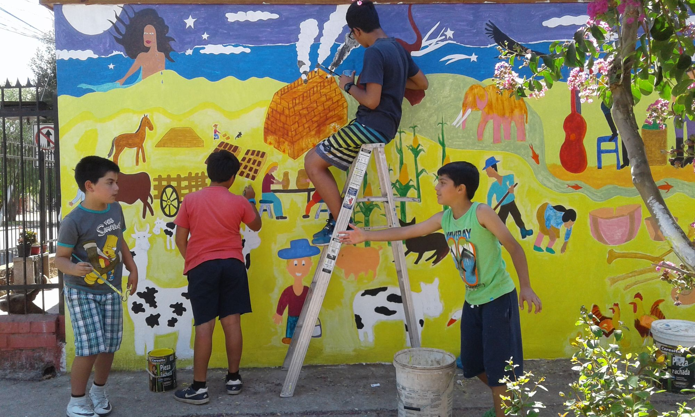

Bordado Urbano
Proyecto de arte comunitario en Calama (2012). Los habitantes bordaron colectivamente un mapa de 3x2 metros representando sus sueños e...
Biografía, obra y gestión cultural desde San Vicente de Tagua Tagua hacia comunidades de Chile y Latinoamérica.
Maximiliano 'Max' Sepúlveda Zúñiga (n. 1974) es un artista visual, artesano y gestor cultural oriundo de San Vicente de Tagua Tagua, Chile. Su trabajo abarca alfarería, cerámica, textiles, arte colaborativo y dirección de arte audiovisual, disciplinas en las que ha desarrollado una amplia producción creativa por más de veinte años.
Se formó junto a maestros artesanos y artistas visuales de Latinoamérica, complementando su aprendizaje en Chile, Argentina y México. Esa formación multicultural atraviesa su obra y su manera de trabajar con comunidades, integrando técnicas tradicionales con una mirada contemporánea y territorial.

Hitos y proyectos clave en más de 20 años de carrera artística.
Exposición individual de alfarería en el Museo Escolar Laguna de Tagua Tagua y co-autoría en el libro histórico y patrimonial sobre la cuenca del río Tinguiririca.
Se titula de Técnico de Nivel Superior en Arte y Gestión Cultural y realiza talleres y co-creaciones de murales textiles colaborativos en Oaxaca y Morelos, México.
Dirección e impartición del taller de bordado tradicional y exposición colectiva en San Pedro de Atacama y Santiago en colaboración con la comunidad y SQM.
Homenaje por su aporte al desarrollo cultural local en el marco del Día del Artesano. Más de 25 años dedicados al arte colaborativo y la gestión cultural.
Seleccionado nacional para el catálogo del Ministerio de las Culturas que reconoce a artesanos con destacada trayectoria y oficio durante la emergencia sanitaria.
Adapta su labor al formato virtual durante la pandemia. Cápsulas de formación en bordado y arpillera para comunidades, reconociendo buenas prácticas de mediación.
Presenta creaciones de moda textil con identidad chilena en la semana de la moda de Costa Rica, integrando artesanía tradicional en el diseño contemporáneo.
Exposición individual 'Textiles y Alfarería del Tagua Tagua' en la School of Art de Dunedin. Intercambio cultural con la tradición maorí.
Residencia de arte colaborativo en el Valle de Alicahue, Región de Valparaíso. Trabajo con comunidades locales en intervenciones artísticas territoriales.
Ganador de los Fondos Concursables para la Cultura del MEC uruguayo. Mapa textil colectivo de la costa de Rocha, Uruguay.
Intervención de arte público colaborativo. Mapa textil de 3×2 metros bordado por más de un centenar de habitantes de Calama.
Investigación y rescate de la alfarería indígena de la zona central de Chile. Exposición en la Sala Samuel Román de Rancagua.
Participa en proyecto de creación artística en Valdivia, financiado por Fondart Regional de Los Ríos. Primer acercamiento al cruce entre artesanía y artes visuales.
Vincular a la comunidad desde la sensibilidad, generando lazos que van más allá de lo cotidiano. El arte comunitario y colaborativo es una herramienta de transformación social.
La práctica de Max cruza cerámica, alfarería, bordado, telar, batik, pintura en seda y dirección de arte audiovisual. Su lenguaje mezcla oficios tradicionales, memoria local y experimentación material para construir relatos visuales con fuerte contenido social.
Muchas de sus obras nacen de procesos participativos: artista y comunidad reflexionan sobre el territorio, sus problemáticas e identidad, y desde ese diálogo co-crean piezas que visibilizan patrimonio, historias y vínculos afectivos.
A lo largo de su trayectoria ha realizado talleres, seminarios, residencias y exposiciones en distintas regiones de Chile y en países como Uruguay, Costa Rica, México y Nueva Zelanda. Su trabajo ha llegado a espacios comunitarios, museos, escuelas de arte y programas públicos de formación.
Como gestor cultural, impulsa proyectos que empoderan a las comunidades y dejan capacidades instaladas: rescate patrimonial, formación en oficios, mediación artística y creación colaborativa. Ha trabajado con instituciones como el Museo Violeta Parra, la Fundación Superación de la Pobreza y programas como Red Cultura.

La obra de Max ha trascendido su territorio de origen mediante exposiciones, residencias y colaboraciones en distintos países. Ha desarrollado proyectos y muestras en Uruguay, Costa Rica, México y Nueva Zelanda, además de compartir su trabajo en diversas regiones de Chile.
Ese recorrido internacional no aparece como una expansión desligada de lo local, sino como una forma de tender puentes entre culturas, oficios y memorias. En cada contexto, su práctica dialoga con comunidades, saberes artesanales y símbolos territoriales para construir procesos de intercambio y co-creación.
Su objetivo es visibilizar, valorar, proteger y revitalizar las identidades locales a través del arte.
Entre los hitos más significativos de su trayectoria se encuentran el proyecto Widüfe Kuyfiche - Alfarero Ancestral, financiado por Fondart; el desarrollo de Bordado Urbano en Calama; y el proyecto Bordado Charrúa de la Memoria, reconocido por los Fondos Concursables para la Cultura del Uruguay.
También destacan su residencia y exposición en la School of Art de Dunedin, Nueva Zelanda, su participación en Costa Rica Fashion Week y su trabajo sostenido de mediación artística y formación de oficios en espacios comunitarios e institucionales.
Su trabajo también ha circulado en documentales, entrevistas y publicaciones especializadas que profundizan en el cruce entre arte, oficio y comunidad.
Una selección de obras y procesos colaborativos representativos de su trayectoria.
Proyecto de arte comunitario en Calama (2012). Los habitantes bordaron colectivamente un mapa de 3x2 metros representando sus sueños e...
Mapa textil colectivo de la costa de Rocha, Uruguay. Ganador de los Fondos Concursables para la Cultura del MEC uruguayo...
Exposición individual en la School of Art de Dunedin, Nueva Zelanda (2018). Diálogo entre la identidad cultural de Tagua Tagua...
Investigación y rescate de la alfarería indígena de la zona central de Chile. Proyecto FONDART 2006.
Serie de intervenciones colaborativas en que comunidades crean murales de telas y bordados para espacios públicos. Incluye el mural 'Inti...
Si quieres conocer más sobre su trabajo, proponer una colaboración o invitarlo a un proyecto, puedes escribirle directamente.